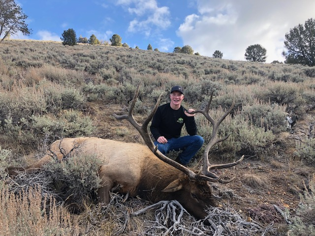

Hunter's Gathering
This website it meant to help hunters, fisherman, and all manner of outdoors man together. It is a place that anyone who spends time in the outdoors to share their stories and share how they accomplish such tasks. This website is also here to help you learn and improve your skills. Outdoorsman spend hours perfecting their craft and often learn by making mistakes. One of the best ways to learn is to learn from their mistakes and avoid making them yourself. If you are willing to share you story to help other people learn. They will likely be willing to help you learn as well.